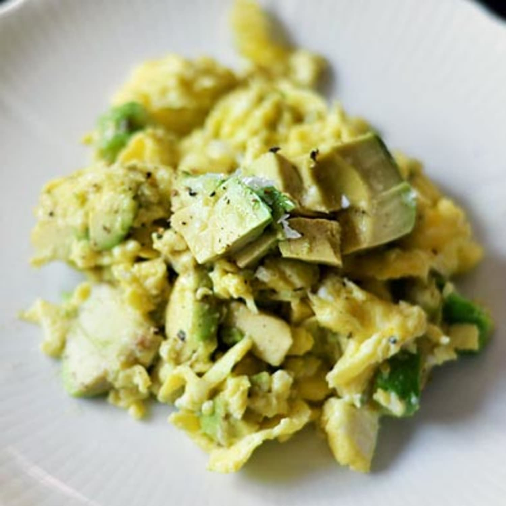

Avocado & Scrambled Eggs

Description
Avocado and Scrambled Eggs are a fat and protein-rich breakfast, ideal for those with high-metabolism. This
breakfast can be prepared fairly quickly, and is high in Vitamin C and Vitamin A.
Ingredients
- Ripe, fresh Avocados
- 3 or 4 large eggs
- Grass-fed butter
- Black Pepper
- Sea Salt
Steps
- On low heat, add grass-fed butter in a skillet
- Crack open and scramble eggs in a bowl
- Add scrambled eggs to the skillet
- While eggs cook on low heat, slice the avocado lengthwise into two halves
- Pitting the avocado simply by chopping your knife into the pit, and rotating 90 degrees
- Use a spoon scraping around the edges to remove the skin from avocado
- Slice avocado into bite-sized pieces
- Now that the avocado is prepared, return to the skillet and scramble or flip the eggs
- Season avocado and eggs with black pepper and salt to taste